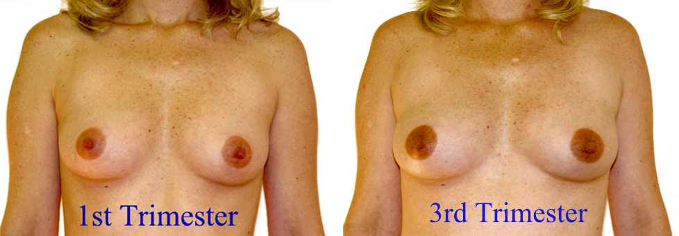

36 anos no posto, 3 de maio — o caso que abre a A14
A paciente chega com um punhado de sintomas que conhece bem — são os mesmos das gestações anteriores. A pergunta que organiza tudo: há certeza?
ObstetríciaParte A · Caso âncoraItens 009–016Caso clínico
Tópico 1
Quem é a paciente e o que ela traz
Paciente, 36 anos, procura o posto de saúde no dia 3 de maio por atraso menstrual. Tem três gestações anteriores e sente-se “grávida de novo” porque reconhece os mesmos sinais das gestações prévias. O peso da paridade é narrativo, não diagnóstico — a paciente pode estar certa ou não, e a palavra do médico vem do exame, não da opinião dela.
DUM: 27 de março; menstruações sempre regulares — atraso em ciclo regular aumenta o valor diagnóstico da informação (ainda assim, atraso sozinho não fecha o diagnóstico). A regra é: regularidade potencializa o dado, não o transforma.
Tópico 2
O exame que o posto consegue fazer hoje
No consultório, o que se vê: hipertrofia de glândulas sebáceas mamárias (Montgomery), aréola secundária (Hunter), arroxeamento de mucosa vulvar e vaginal (Chadwick/Jaquemier), amolecimento do colo (Goodell), útero aumentado e abaulado à esquerda (Piscacek). É o pacote clássico de semiologia do ninho — mas só o ninho, sem fechar certeza.
O que não se viu: BCF ao sonar, MF pelo médico, Puzos, beta-hCG e ultrassom. O enunciado diz “ainda não foi possível escutar BCF ao sonar” — uma frase que soa como descuido, mas é a âncora do raciocínio: a ausculta não foi obtida. Toda a certeza por ausculta fica de fora.
Tópico 3
A pergunta do caso: há certeza?
Existe sinal de certeza? Resposta: não. Há presunção (mãe, mama, sistêmico — atraso, enjoo, mastalgia) e probabilidade (ninho — colo, útero, vagina). Nenhum sinal de certeza está presente. O caso concentra vários sintomas e sinais sugestivos, mas sugestão ≠ certeza.
Esta é a resposta-âncora que carrega a apostila inteira: classificar antes de afirmar. Toda a P3 (tríade) e a P11 (fecho do caso) se apoiam aqui.
Tópico 4
Pausar e reler antes de seguir
Dispositivo didático:pausar, reler o caso e procurar explicitamente se há certeza antes de seguir. O erro clássico é “fechar” gravidez por volume de achados, sem checar o degrau de cada um. O olho viciado pula essa checagem — a regra da casa a impõe.
Sem essa pausa, a próxima página vira lista decorada de epônimos. Com ela, vira classificação do que o caso mostrou.
Útero abaulado à esquerda + toque bimanualCorte coronal e sagital do útero no 1º trimestre: assimetria de implantação (Piscacek) e mãos do toque bimanual — a semiologia do ninho que o caso mostrou.Esquema autoral · SVG-piso (S2)

Aréola 1º × 3º trimestre: progressão da aréola secundária (Hunter)
O caso apresenta aréola secundária bem desenvolvida — aqui, em par, você vê a mesma mama no 1º e no 3º trimestre: o alvo do caçador (Hunter) se expande com a gestação.
Breast changes during pregnancy (1st vs 3rd trimester). Photo: Michael Hughey, MD / Brookside Associates, Ltd. Licensed under CC BY-SA 3.0. Source: https://commons.wikimedia.org/wiki/File:Breast_changes_during_pregnancy_1.png
Quiz — fixação
No exame descrito, por que não há certeza de gravidez?
Gabarito B.Certeza clínica = ouvir/sentir; o caso explicitamente não tem BCF ao sonar nem MF/Puzos; lab/US ainda não entraram.
(A)invertido: regularidade aumenta o valor da DUM, não o anula.
(C)abaulamento à esquerda é probabilidade (Piscacek), não sinal que exclui gravidez.
(D)mistura eixos sem lógica — sintomas não cancelam sinais de ninho.
Por que cair na A:confusão comum entre “valor diagnóstico” e “certeza” — a regularidade eleva o valor, não fecha o diagnóstico.